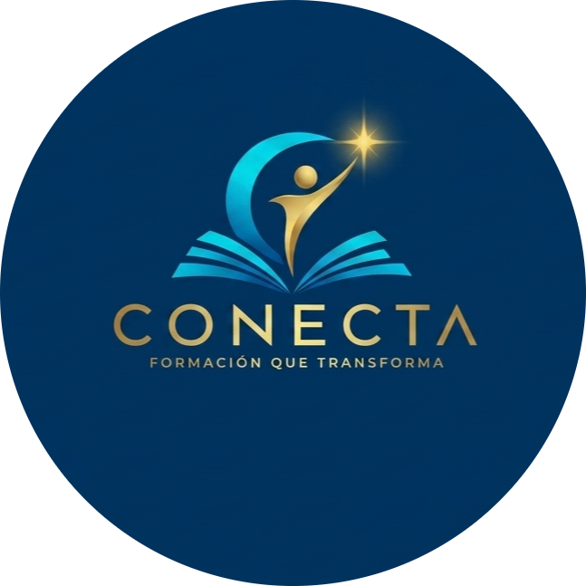
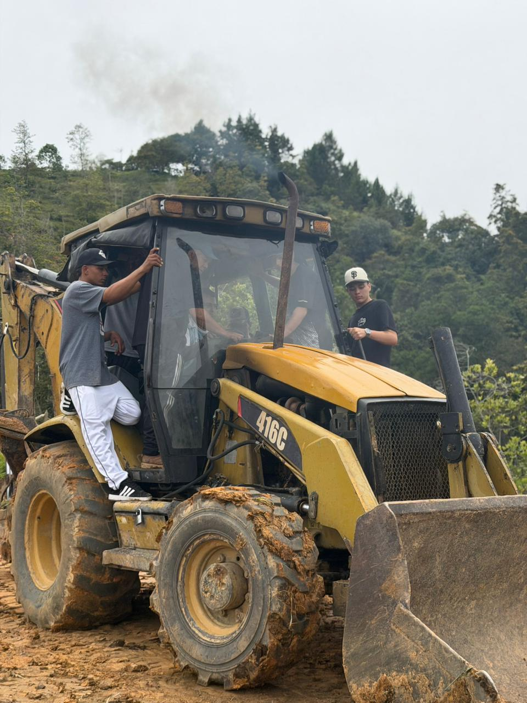
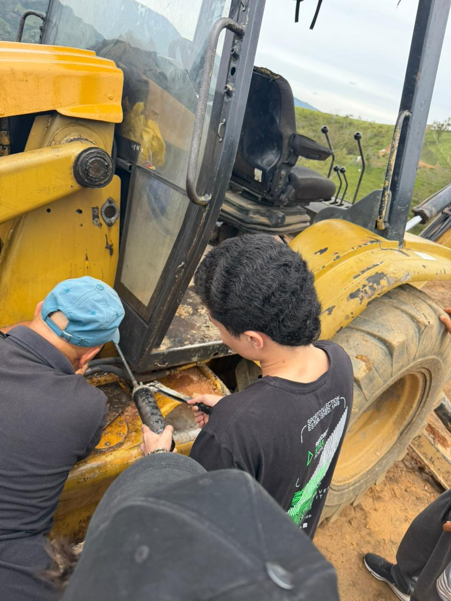
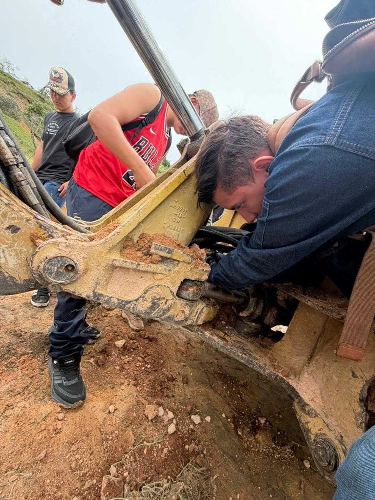
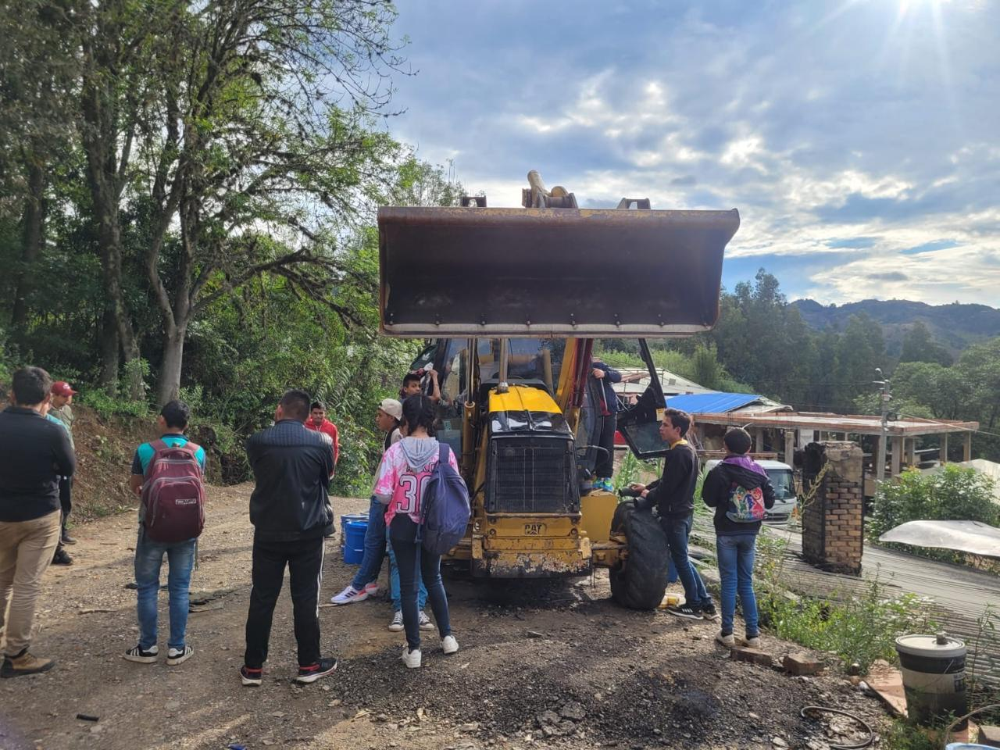

Información General
- ⏱️ Duración: 14 clases.
- 📅 Días: Sábados y domingos.
- 🕗 Jornada: Mañana o tarde.
- 📍 Modalidad: Presencial.
- 🎓 Certificación: Sí.

Conectamos conocimientos, transformamos vidas.
Programa diseñado para desarrollar las competencias básicas en la operación segura y eficiente de retroexcavadoras de llantas, fortaleciendo conocimientos técnicos y habilidades prácticas para desempeñarse como operador de maquinaria pesada.

Al finalizar el programa el estudiante contará con los conocimientos fundamentales para desempeñarse como operador de maquinaria pesada, aplicando normas de seguridad, buenas prácticas de operación y mantenimiento preventivo de la retroexcavadora.


